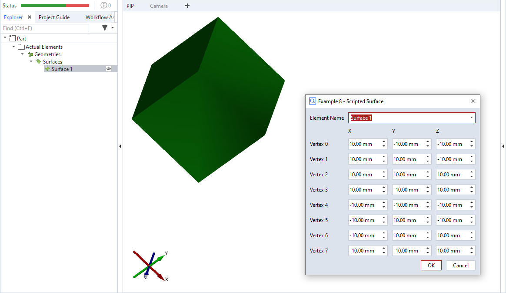

ex08_surface

This is an example for a scripted ‘surface’ element. The dialog allows to specify the coordinates of eight vertices defining a mesh. The triangles for defining the mesh are hard-coded in this example. The resulting body is a cuboid.
Note
The mesh triangles are defined by indices into the array of vertices. The vertices defining a triangle must be specified in counter-clockwise order (as viewed from outside).
Note
Please see offset_point_v2.md for a complete scripted elements example with detailed description.
Source code excerpt
1def dialog(context, params):
2 #[...]
3
4def calculation(context, params):
5 valid_results = False
6 v0 = gom.Vec3d(params['v0_x'], params['v0_y'], params['v0_z'])
7 #[...]
8 v7 = gom.Vec3d(params['v7_x'], params['v7_y'], params['v7_z'])
9
10 # Calculating all available stages
11 for stage in context.stages:
12 # Access element properties with error handling
13 try:
14 context.result[stage] = {
15 'vertices': [v0, v1, v2, v3, v4, v5, v6, v7],
16 # two triangles per side of the cuboid
17 # ----- front ------ , ----- right ------- , ----- top ----------
18 'triangles': [(0, 1, 2), (0, 2, 3), (1, 5, 6), (1, 6, 2), (3, 2, 6), (3, 6, 7),
19 # ----- bottom ----- , ----- back -------- , ----- left ---------
20 (0, 1, 5), (0, 5, 4), (4, 5, 6), (4, 6, 7), (0, 4, 7), (0, 7, 3)]
21 }
22 context.data[stage] = {"ude_mykey": "Example 8"}
23 except Exception as error:
24 context.error[stage] = str(error)
25 else:
26 valid_results = True
27 return valid_results